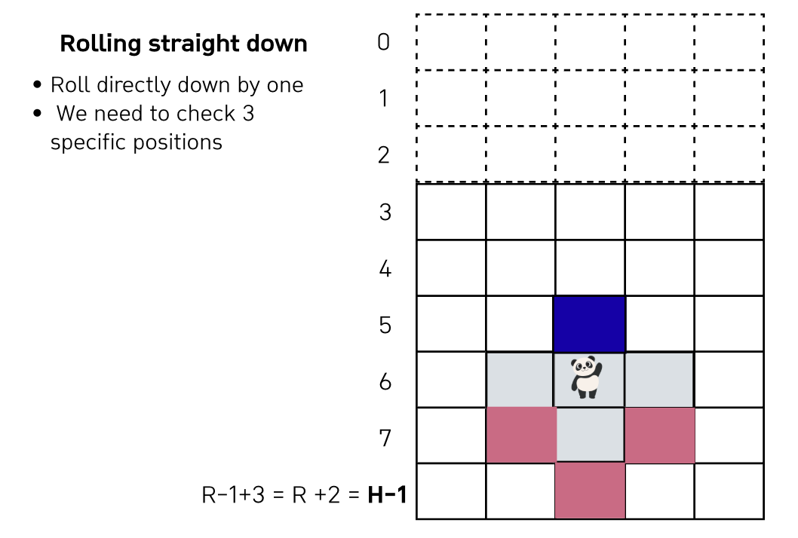
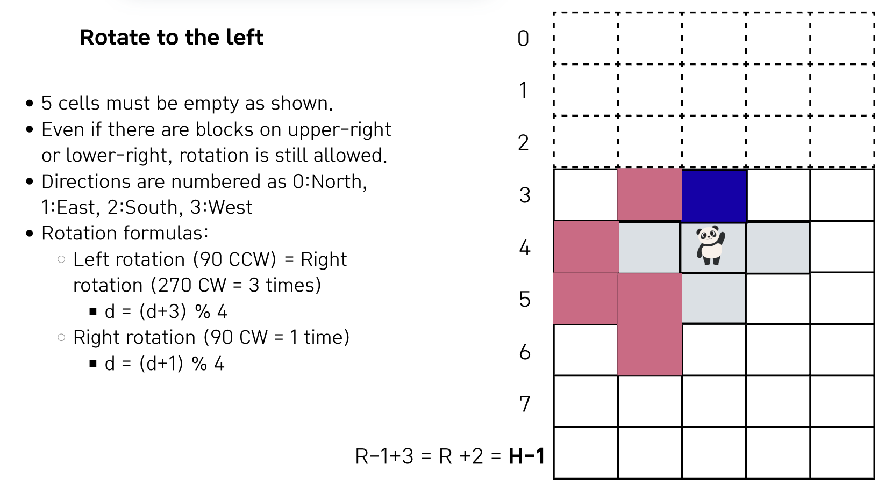

Lecture 1-2. 구현 실습#
예시 문제 링크
1번: 마법의 숲 탐색 문제 풀이 BFS#
문제 정리
격좌/좌표: RxC를 HXC로 변환 (O, R-1) -> (0, H-1)까지
move_golem(): 아래로 최대한 내려갈 수 있는 (move as far south as possible) 함수 구현
Step 2-1: rolling downward -> collision check 3 cells
Step 2-2: rotating left while moving downward -> collision check 5 cells
Step 2-3: rotating right while moving downward -> collision check 5 cells
settle_or_reset():
정착 실패: 골렘이 멈췄을 때 십자 5칸 중 한 칸이라도 숲 밖(상단 패딩 포함 관점)이라면, 지금까지 놓인 모든 골렘을 전부 지우고 이번 시도는 0점 처리 후 다음 시도로 넘어간다.
정착 성공 시 배치: 정지 위치에 중심+팔 4칸을 기록하고, 출구 방향도 함께 저장한다(다음 단계 탐색에 필요).
spirits 탐색 (explore)
골렘의 출구와 가까운 골렘을 통해 seed max값을 초기화 -> 8가지 가능한 방향으로 같은 component의 값들에 큰 값 -> 작은 값으로 value propagation(BFS사용)
관련하여
 시드의 최대값 초기화가 중요한 이유 확인
시드의 최대값 초기화가 중요한 이유 확인
solve(): 위의 함수들을 사용하여, input을 받고 결과 출력하는 함수
격자/좌표:
숲은 R×C 격자. 문제 기준으로 가장 위가 1행, 가장 아래가 R행(좌표는 1-based). 정령(골렘)은 북쪽(격자 위쪽) 바깥에서 진입한다.
(구현 팁) 진입·회전 동작을 편하게 처리하려고 상단에 3행을 더 붙인 격자(R+3×C) 로 두고 시뮬레이션하는 전형적인 방식이 많이 쓰인다.
입력 & 골렘 정의 (총 K번)
한 번의 시도마다 열 c(1…C), 출구 방향 d(0:북, 1:동, 2:남, 3:서) 가 주어진다. 골렘은 십자(+) 모양(중심+상하좌우) 으로 5칸을 차지하며, 출구는 중심에서 d 방향으로 인접한 1칸이다.
graph의 확장

In the beginning, the golem may extend up to 3 cells above the forest. To handle this, we add 3 buffer rows at the top of the grid. These buffer rows are not part of the forest but provide enough room for the golem to move and settle safely.
max value of each id
graph를 확장했으므로 (H= R + 3), best는 현재 골렘의 center_y, center_x보다 한 칸 아래인 것 ((cy +1, cx)이 맞으나, 확장된 그래프 전의 index를 사용해야하므로 (cy + 1 -3, cx)이다. 하지만, 1열을 0이 아닌 1로 표시하므로 (cy + 1 -3 +1, cx)로 결국 (cy -1, cx)가 된다.
각 step 구현
When the golem moves one step down, we must check 3 positions below the center: directly underneath, and one cell to the left and right. If all 3 are empty, the golem can move downward without collision. 
Now let’s look at rotation to the left. For the golem to rotate, five specific cells must be empty. Interestingly, the rules allow rotation even if the upper-right or lower-right cells are occupied. We number the directions North, East, South, and West as 0, 1, 2, and 3. Using this, left rotation is simply (d + 3) mod 4, and right rotation is (d + 1) mod 4.

Rotation to the right works symmetrically. Again, five surrounding cells must be empty to allow the move. The concept is the same as left rotation, but we apply the clockwise formula.

When the golem finally stops, all four arms must be inside the forest area, which is from row 3 down to H–1. To manage state, we store each golem’s position and exit direction in units[gid]. We also record which exit belongs to which golem in exit_map. This way, exit_map tells us the gid, and units gives us the exact center and direction.

정보 저장
We maintain two separate grids: golem_arr and exit_map. The golem array records body occupancy and is used for collision checks. The exit map records only exits, which lets us trace connectivity between golems using BFS. This separation is crucial because body cells and exit cells need to be treated differently.

최댓값 전파 BFS
현재 골렘의 최댓값을 전파하려면, “다른 골렘의 ‘출구‘“와 맞닿아있어야함. 따라서, 현재 골렘 8방에 다른 골렘의 출구가 있는지 출구 일때에만 전파를 해주는 것을 명심!

Finally, let’s look at how we propagate the maximum reachable row.
Step one: if
the current golem’s exittouches a neighbor’s body, we inherit itsmax_rowas theseedvalue.Step two: using BFS, we spread values along exit-to-exit connections across the whole component.
This two-step design ensures accuracy — newly placed golems immediately get the correct value. It also improves efficiency, since we avoid repeated updates by maximizing early and propagating just once.

best 계산 단계 (시드 확정)
start_id의 출구 주변을 보면서, 이미 숲에 있던 이웃 골렘들이 가지고 있던max_row값 참고방금 들어온 골렘이 가질 수 있는 가장 큰 시작값 (best)를 정함.
전파 단계 (BFS)
이제
start_id가 속한 component전체에 대해, max_row가 작은 이웃 노드들을 best 값으로 끌어올림.이 과정을 통해 같은 컴포넌트 안의 모든 골렘이 최대값을 공유
이렇게 해 두면, 나중에 컴포넌트 안에서 어느 골렘을 시작점으로 잡아도 같은 답을 얻을 수 있습니다.
다음 골렘을 위해 준비 완료
Solution
import sys
sys.stdin = open('Input.txt', 'r')
from collections import deque
R, C, K = map(int, input().split())
H = R + 3
graph = [[0] * C for _ in range(H)]
id_to_center_dir = dict()
'''
숲의 바깥방향에서 시작해 골렘의 중아이 c열이 되도록 하는 위치에서 내려옴.
1) 남쪽 2) 서쪽 rotation + 아래 한 칸 3) 동쪽 rotation + 아래 한칸
---> 가장 남쪽 도달 후에는 정령은 골렘 내에서 상하좌우 인접칸으로 이동 가능
---> 최종에서 골렘의 몸 일부가 여전히 숲을 벗어난 상태라면 모든 골렘 삭제 및 새롭게 숲 탐색 -> 이 경우 최종 위치를 답에 포함시키지 않음.
---> 골렘의 출구가 다른 골렘과 인접하다면 해당 출구를 통해 다른 골렘으로 이동 가능
----> 정령이 도달하게 되는 최종 위치 누적
정령은 어떤 방향에서든 골렘에 탑승 가능, 내릴 때에는 정해진 출구를 통해서만 내릴 수 있음.
'''
# 북, 동, 남 ,서
AY = [-1, 0, 1, 0]; AX = [0, 1, 0, -1]
DY = [1, 2, 1]; DX = [-1, 0, 1]
LY = [-1, 0, 1, 1, 2]; LX = [-1, -2, -2, -1,-1]
RY = [-1, 0, 1 ,1, 2]; RX = [1, 2, 1, 2, 1]
max_values = [0] * (K+1)
def in_range(y, x):
return 0<=y <H and 0<=x < C
def in_forest(y, x):
return 3 <= y < H and 0<=x < C
def can_move(cur_y, cur_x, DIR_Y, DIR_X):
for dt_y, dt_x in zip(DIR_Y, DIR_X):
ny = cur_y + dt_y
nx = cur_x + dt_x
if not in_range(ny, nx) or graph[ny][nx] != 0:
return False
return True
def place(center_y, center_x, dir):
y = center_y; x = center_x
while True:
if can_move(y, x, DY, DX): # 아래
y += 1
continue
if can_move(y, x, LY, LX): # 왼쪽 아래
y += 1; x -= 1
dir = (dir +3)%4
continue
if can_move(y, x, RY, RX): # 오른쪽 아래
y += 1; x += 1
dir = (dir+1)%4
continue
# 위의 3가지 경우로 못가는 경우 멈춤
break
return y, x, dir
def reset_or_settle(cy, cx, dir, spirit_id):
global id_to_center_dir
# reset
for t in range(4):
ny = cy + AY[t]; nx = cx + AX[t]
if not in_forest(ny, nx):
# reset :graph and id_to_center_dir
for y in range(H):
for x in range(C):
graph[y][x] = 0
id_to_center_dir = dict()
return False
# settle
graph[cy][cx] = spirit_id
for t in range(4):
ay = cy + AY[t]; ax = cx + AX[t]
graph[ay][ax] = spirit_id
# id_to_center_dict update
id_to_center_dir[spirit_id] = (cy, cx, dir)
return True
def exit_cell(id_):
cy, cx, cd = id_to_center_dir[id_]
return cy + AY[cd], cx + AX[cd]
def calculate(id):
# 현재 위치 Max값 구하기
cy = id_to_center_dir[id][0]
cx = id_to_center_dir[id][1]
c_dir = id_to_center_dir[id][2]
# exit
ey = cy + AY[c_dir]
ex = cx + AX[c_dir]
best = cy + 1 - 2 # 현재 위치에서 골렘 아래 팔로 내려가는 것 - 2(원래 map에서의 column값)이 가장 큰 값
# 현재 골렘의 출구와 연결되어 있는 골렘들의 max값으로 update
# 이미 다른 골렘들은 연결되어 있는 골렘들이 가진 max값으로 update되어 있기 때문에 출구에서 4 방향을 보는 것만으로 충분함.
for t in range(4):
ny = ey + AY[t]
nx = ex + AX[t]
if in_forest(ny, nx) and graph[ny][nx] != 0 and graph[ny][nx] != id:
best = max(best, max_values[graph[ny][nx]])
# 현재 H 행이므로 H = R + 3 인데, 첫 행을 1부터 시작하므로 -3 + 1 해서 -2
max_values[id] = best
# propagate
# 현재 골렘 옆에 있는 골렘 값들도 max 값으로 update해주기
# 8방향에서 내 쪽으로 들어올 수 있기 때문에, "옆에 출구가 있는 것들에 한해" 업데이트 해주기?!
# 연결되어 있지 않은 골렘들이 현재 id에 내려온 골렘때문에 연결될 수 있으므로 propagation
Neighbor_Y = [-2, -1, -1, 0, 0, 1, 1, 2]
Neighbor_X = [0, -1, 1, -2, 2, -1, 1, 0]
# BFS
q = deque([(cy, cx, id)]) # center y, x값을 넣어야함.
visited = set()
visited.add(id)
while q:
y, x, cur_id = q.popleft()
for t in range(8):
ny = y + Neighbor_Y[t]; nx = x + Neighbor_X[t]
if in_forest(ny, nx) and graph[ny][nx] != 0 and graph[ny][nx] != cur_id:
# 현재 위치가 다른 골렘의 출구인 경우만, propgate
if exit_cell(graph[ny][nx]) == (ny, nx):
n_id = graph[ny][nx]
if not n_id in visited:
visited.add(n_id)
# update
max_values[n_id] = max(max_values[n_id], best)
q.append((id_to_center_dir[n_id][0], id_to_center_dir[n_id][1], n_id)) # center 값 update
def solve():
total = 0
for spirit_id in range(1, K+1):
c, d = map(int, input().split())
# print(f"from {c-1} column")
y = 1 ; x = c -1
# place, # 현재 골렘안의 정령이 최대로 갈 수 있는 위치 구하기
cur_y, cur_x, cur_dir = place(y, x, d)
# forest밖이면 reset, 아니면 graph및 id_to_center_dirs에 표시
if not reset_or_settle(cur_y, cur_x, cur_dir, spirit_id):
# print(f"max y of {spirit_id}: ignore")
# for row in graph:
# print(row[:])
continue
calculate(spirit_id)
# print(f"max y of {spirit_id}: {max_values[spirit_id]}")
# for row in graph:
# print(row[:])
total += max_values[spirit_id]
print(total)
if __name__ == "__main__":
solve()
3번: 미생물 연구 Sorting, PriorityQueue#
문제 정리
NxN 정사각형 배양 용기, 좌측 하단 (0,0), 우측 상단 (N, N)
총 Q번 실험동안, 실험 결과 기록
2-1. insert_and_get_result() 미생물 투입 후, 배양
(r1, c1) ~ (r2, c2) 직사각형 미생물 투입, 영역내에는 새로 투입된 미생물만 남음.
기존에 있던 미생물이 먹힌 경우, 영역이 두 개 이상으로 나뉘면 기존 미생물은 모두 사라짐. -> 항상 미생물은 하나의 그룹으로만 이루어지게 만듦.
2-2. 배양 용기 이동: move_microbe()
기존 용기와 동일한 새로운 배양 용기로 이동. 기존 배양 용기에 미생물이 한 마디도 남지 않을 때까지
가장 차지한 영역 ((r1, c1) ~ (r2, c2))이 넓은 무리 하나 선택 -> 2개 이상이면 먼저 투입된 미생물 선택 (용기에는 미생물을 넣은 시간 정보 필요 -> idx가 작은 것 선택)
선택된 미생물의 영역 ((r1, c1) ~ (r2, c2))은
배양 용기의 범위를 벗어나지 않으며
다른 미생물의 영역과 겹치지 않아야하고,
위의 조건에서 최대한 x좌표가 작은 위치로 미생물을 옮기는데,
그 위치가 2개 이상이면 최대한 y좌표가 작은 위치로 오도록 옮김
위의 조건이 없다면, 옮기지 못하고 사라짐
2-3. record()
미생물 무리 중 상하좌우로 닿아있는 인접한 무리 확인
맞닿은 면이 둘 이상이더라도 micro_id같으면 한 번만 확인
인접한 무리가 있으면
확인하는 두 무리가 A,B라면 (미생물 A영역의 넓이) x (미생물 B영역의 넓이) 성과
확인한 모든 쌍의 성과 기록
debugging시 CCW 90도 rotation 적용
def print_rotated_CCW_90(my_map):
# new_map = [[0] * N for _ in range(N)]
for y in range(N):
for x in range(N):
# new_map[y][x] = my_map[N-x-1][y]
print(my_map[x][N-y-1], end=' ')
print()
print_rotated_CCW_90(graph)
원점위치에 따른 좌표 변환
좌상단이 시작점인지, 좌하단이 시작점인지 좌표 변환 

요약하자면,
좌하단→좌상단(배열):
row = N - 1 - y,col = x회전: Transpose + (CW=flip left–right, CCW=flip up–down)
뒤집기: 상하=row만 뒤집기, 좌우=col만 뒤집기
sort
주의해야할 것은, lowest와 rear을 비교하는 것!
# sort id_to_locs_list in descending order of the area and id
list_len = len(id_to_locs_list)
for f in range(list_len):
lowest = f
for r in range(f+1, list_len):
if not compare(len(id_to_locs_list[lowest][1]), len(id_to_locs_list[r][1]), id_to_locs_list[lowest][0], id_to_locs_list[r][0]):
lowest = r
# SWAP
if lowest != f:
temp = id_to_locs_list[f]
id_to_locs_list[f] = id_to_locs_list[lowest]
id_to_locs_list[lowest] = temp
3중 for loop안에서 닫는 위치
for i in range(len(locs_and_id)): # [루프 1]
for origin_x in range(N): # [루프 2]
for origin_y in range(N): # [루프 3]
...
if flag:
...
break # <-- 여기서 끊기는 건 루프 3만
if flag: # [루프 2] 중단
break
set.union
set1.union(set2) # X
set1 = set1.union(set2) # O
내 문제 풀이
from collections import deque
def yx_from_rc(c, r):
return (N-r-1, c)
def put_new_microbe(y, x, t, v, micro_id):
# # 바뀐 것에 대해서 작은 것 ~ 큰 것으로 분류
# (y, x)는 포함 (t, v)는 불포함
# small_y = y if y < t else t
# big_y = y if y > t else t
# small_x = x if x < v else v
# big_x = x if x > v else v
# print(f'Cur graph after put at {y, x} ~ {t, v}')
# inclusive ~ exclusive
eatened_microbe_ids = set()
for a in range(y, t, -1):
for b in range(v-1, x-1, -1):
if graph[a][b] != 0:
eatened_microbe_ids.add(graph[a][b])
# 다른 미생물들은 잡아먹음
graph[a][b] = micro_id
# 기존 무리의 영역이 2개 이상이되면, 나눠진 미생물은 모두 사라짐.
# 잡아먹힌 micro_ids에 대해서 확인
for removed_id in eatened_microbe_ids:
nums, locs = count_group_of_id(removed_id) # int, list
# 해당 미생물을 없앰
if nums >= 2:
for ry, rx in locs:
graph[ry][rx] = 0
def in_range(y, x):
return 0<=y <N and 0<=x <N
def is_closer_to_lower_left(tuple1, tuple2):
if tuple1[0] != tuple2[0]:
return tuple1[0] > tuple2[0] # y가 더 큰 것
return tuple1[1] < tuple2[1] # x는 더 작은 것
def sort_locs_closer_to_lower_left(tuple_list):
tuple_list_len = len(tuple_list)
for f in range(tuple_list_len):
lowest = f
for r in range(f+1, tuple_list_len):
if not is_closer_to_lower_left(tuple_list[lowest], tuple_list[r]):
lowest = r
if lowest != f:
# SWAP
temp_tuple = tuple_list[lowest]
tuple_list[lowest] = tuple_list[f]
tuple_list[f] = temp_tuple
def get_ids_and_shapes():
id_to_locs = dict()
# 현재 최대 cur_micro_id만큼의 개수가 존재할 수 있음 (지워진 것 빼고)
for a in range(N):
for b in range(N):
if graph[a][b] != 0 and graph[a][b] not in id_to_locs:
locs = set() # NOTE: locations 추적, 새로운 ID 발견할 때마다 새롭게 INIT 필요
q = deque([(a, b)])
locs.add((a, b))
while q:
cury, curx = q.popleft()
for t in range(4):
ny = cury + DY[t] ; nx = curx + DX[t]
# 현재 micro_idx와도 동일해야함
if in_range(ny, nx) and (ny, nx) not in locs and graph[ny][nx] == graph[a][b]:
q.append((ny, nx))
locs.add((ny, nx))
# micro_id마다 위치를 연결하는 dictionary 생성
id_to_locs[graph[a][b]] = list(locs)
return id_to_locs
def move_microbe(new_graph):
# 현재 global graph에 있는 미생물들을 보고 new_graph에 옮겨 담기
# Step 1: 1개의 그룹씩 있는 각 미생물들의 위치 locs구하기, len(locs)이 가장 높은 것이 가장 먼저 옮겨짐
# 모양은 원점에서 가장 왼쪽 아래 (바꾼 그래프 상으로는 왼쪽 위)와 가장 가까운 점까지의 거리만큼 모두 이동하면 됨.
id_to_locs = get_ids_and_shapes()
# print(f'Current id with locs \n{id_to_locs}')
# print('Len: ', len(id_to_locs))
# id_to_locs을 정렬
# 1. 개수가 가장 많은 것
# 2. 개수가 동일하다면 가장 먼저 투입된 미생물 선택
id_to_locs_list = []
for key, value in id_to_locs.items():
id_to_locs_list.append((key, value))
sort_list(id_to_locs_list) # call by reference
# print(f"Sorted as described in the problem \n {id_to_locs_list}")
# locs은 origin (7, 0) 과 가장 가까운 순서대로 정렬 즉, ascending order
for idx, (id, locs) in enumerate(id_to_locs_list):
# set 재할당
sort_locs_closer_to_lower_left(locs)
id_to_locs_list[idx] = (id, locs)
# print(f"Sorted id_to_locs closer to the origin \n {id_to_locs_list}")
each_nums = [] # 옮겨서 살아남은 미생물들의 개수만 append
# 옮기기
# 모든 미생물에 대해
for id, locs in id_to_locs_list:
done = False
# 이 조건안에서 colum 좌표가 작은 위치로 옮기고, 그 위치가 둘 이상이면 최대한 row 좌표가 작은 위치로 오도록 옮김 (x좌표가 작은 위치 -> y가 작은 위치)
# 시작 위치 찾기: b를 outer loop에 둬서 x가 작은 위치를 먼저 확인
# for ori_y in range(N-1, -1, -1):
# for ori_x in range(N):
for ori_x in range(N):
for ori_y in range(N-1, -1, -1):
#### NOTE: 매 origina마다 update하지 않으면, 이전에 실패한대로 계속 False로 머무르게됨.
is_the_origin_ok = True
if new_graph[ori_y][ori_x] != 0: # 옮길 그래프에서 시작점 for loop들어가기 전에 미리 체크해서 시간 줄이기
continue
# 미생물 무리가 차지한 영역이 배양 용기를 벗어나지 않아야함
# 현재 locs의 모든 점이 (a,b)만큼 평행 이동했을 때 벗어나면 안됨
# NOTE: dif_y, dif_x는 제일 작은 지점과의 거리임!! 고정!!!!
dif_y = locs[0][0] - ori_y
dif_x = locs[0][1] - ori_x
for cur_y, cur_x in locs:
# NOTE: dif_y, dif_x는 제일 작은 지점과의 거리임!!
n_y = cur_y-dif_y
n_x = cur_x-dif_x
# print(f"Move point {cur_y, cur_x} -> {n_y, n_x}")
# 평행 이동한 점들이 배양용기를 벗어나거나 다른 microbe가 있으면
if (not in_range(n_y,n_x)) or (new_graph[n_y][n_x] !=0):
is_the_origin_ok = False
break
# 다른 미생물이 이미 있으면 이곳을 시작점으로 할 수 없음
if is_the_origin_ok and new_graph[ori_y][ori_x] == 0: # 괜찮으면 new_graph에 옮김
dif_y = locs[0][0] - ori_y
dif_x = locs[0][1] - ori_x
for cur_y, cur_x in locs:
n_y = cur_y-dif_y
n_x = cur_x-dif_x
new_graph[n_y][n_x] = id
done = True
# each_nums update
each_nums.append(len(locs))
# 한번 옮겼으면 2중 for loop을 멈춰야함.
if done:
break # stack구조에서 가장 안쪽 for loop
if done:
break # stack구조에서 가장 바깥쪽 for loop
# 그게 아니라면 어떤 곳에도 둘 수 없다면 사라짐 (update를 안하면 됨.)
# 살아남은 것들만 개수 return
return len(each_nums)
def compare(locs1, locs2, id1, id2):
if len(locs1) != len(locs2):
return len(locs1) > len(locs2) # 개수가 더 많은 것이 좋음
if id1 != id2:
return id1 < id2 # 먼저 들어온 것일수록 좋음
else:
return True
def sort_list(my_list):
list_len = len(my_list)
for front in range(list_len):
lowest = front
for rear in range(front+1, list_len):
# compare(locs1, locs2, id1, id2)
if not compare(my_list[lowest][1], my_list[rear][1], my_list[lowest][0], my_list[rear][0]):
lowest = rear
# 위치 변경이 있는 경우 SWAP
if lowest != front:
temp_tuple = my_list[front]
my_list[front] = my_list[lowest] # tuple의 재할당은 가능 , 다만 tuple은 t[0] = 99로 'item' assignment는 하지못함.
my_list[lowest]= temp_tuple
def count_group_of_id(m_id):
cnt = 0
visited = set()
DY = [-1, 1, 0, 0]; DX =[0, 0, -1, 1]
# 맵 전체 돌면서 확인
for a in range(N):
for b in range(N):
if graph[a][b] == m_id and (a, b) not in visited:
# visited propgation
q = deque([(a, b)])
visited.add((a, b))
while q:
cury, curx = q.popleft()
for t in range(4):
ny = cury + DY[t] ; nx = curx + DX[t]
if in_range(ny, nx) and (ny, nx) not in visited and graph[ny][nx] == m_id:
q.append((ny, nx))
visited.add((ny, nx))
#### BFS가 끝나면 group 1개
cnt += 1
return cnt, list(visited)
def solve():
global N, graph,DY, DX
DY = [-1, 1, 0, 0]; DX =[0, 0, -1, 1]
# f = open('/Users/dayelee/Documents/GitHub/mybook/Input.txt', 'r')
N, Q = map(int, input().split())
graph = [[0]*N for _ in range(N)]
for micro_id in range(1, Q+1):
c1, r1, c2, r2 = map(int, input().split())
# prelim
y, x = yx_from_rc(c1, r1)
t, v = yx_from_rc(c2, r2)
# Step 1:
# 직사각형 영역에 미생물 투입 [(y, x) ~ (t, v)) inclusive ~ exclusive
# 다른 미생물들은 잡아먹음
# 기존 무리의 영역이 2개 이상이되면, 나눠진 미생물은 모두 사라짐.
put_new_microbe(y, x, t, v, micro_id)
# print("Graph after putting new microbe")
# for row in graph:
# print(row)
# Step 2: 배양 용기 이동
# 가장 column 좌표가 작으면서 row 좌표가 작은 위치(x가 작고 그 다음에 y가 작은 위치로 이동)
moved_graph = [[0]*N for _ in range(N)]
nums = move_microbe(moved_graph) # call by reference
# print(f"each nums: {each_nums}")
# print("Graph after Moving microbe")
# for row in moved_graph:
# print(row)
# Step 3: 실험 결과 기록
# 그룹이 2개 이상일 때 개수들을 다 곱함
# NOTE: graph는 이전 moved_graph로 update
graph = [row[:] for row in moved_graph]
if nums >= 2:
result = 0
# 새로 만들어진 graph의 shape구하기
id_to_locs_dict = get_ids_and_shapes()
# 인접한 두 무리가 있으면, 곱해서 더하기
keys = [key for key in id_to_locs_dict.keys()]
# result = []
# for p1, p2 in all_pairs:
for idx, key_1 in enumerate(keys):
for key_2 in keys[idx+1:]:
if is_adjacent(key_1, key_2, id_to_locs_dict[key_1], id_to_locs_dict[key_2]):
result += len(id_to_locs_dict[key_1]) * len(id_to_locs_dict[key_2])
print(result)
else:
print(0)
def is_adjacent(id1, id2, locs1, locs2):
for y, x in locs1: # id1이 있는 좌표에 대하여
for t in range(4):
ny = y + DY[t]; nx = x + DX[t]
# 유효한 4방향 중 id2가 하나라도 잇다면,
if in_range(ny, nx) and graph[ny][nx] == id2:
return True
return False
if __name__ == '__main__':
solve()
내 문제 풀이 2
debugging시 graph를 CCW 90로 돌려서 풀고, 실제 문제 구현할때는 (c, r)로 구현하여 푼 문제. 0,0은 좌상단이므로, 미생물을 옮길때는 outer loop이 y, inter loop이 x가 온다.
from collections import deque
# f = open("/Users/dayelee/Documents/GitHub/mybook/Input.txt", 'r')
N, Q = map(int, input().split())
graph = [[0]*N for _ in range(N)]
DY = [-1, 1, 0, 0]; DX = [0, 0, -1, 1]
def print_rotated_CCW_90(my_map):
# new_map = [[0] * N for _ in range(N)]
for y in range(N):
for x in range(N):
# new_map[y][x] = my_map[N-x-1][y]
print(my_map[x][N-y-1], end=' ')
print()
def in_range(y, x):
return 0<=y < N and 0<=x<N
def find_count_and_locs(id):
count = 0
visited = set()
for y in range(N):
for x in range(N):
if (y, x) not in visited and graph[y][x] == id:
q = deque([(y, x)])
visited.add((y, x))
while q:
cur_y, cur_x = q.popleft()
for t in range(4):
ny = cur_y + DY[t] ; nx = cur_x + DX[t]
if in_range(ny, nx) and (not (ny,nx) in visited) and graph[ny][nx] == id:
visited.add((ny, nx))
q.append((ny, nx))
count += 1
# visited sort in ascending order
visited = list(visited)
visited.sort()
return count, visited
def place_new_microbe(r1, c1, r2, c2, m_id):
removed_id = set()
# inclusive ~ exclusive
for y in range(r1, r2):
for x in range(c1, c2):
if graph[y][x] != 0 and graph[y][x] != m_id:
removed_id.add(graph[y][x])
graph[y][x] = m_id
# check current id_to_cells
# for removed microbe, check if they are separated into 2 groups
for id in removed_id:
count, locs = find_count_and_locs(id)
if count >= 2:
for loc in locs:
graph[loc[0]][loc[1]] = 0
def move(cur_id):
# STEP1: order priorities: 1. 가장 큰 영역 차지 2. id가 작은 것
# 이전부터 현재까지 id에 대해 id_to_dict variable 생성
id_to_locs_list = []
for id in range(1, cur_id+1):
count, locs = find_count_and_locs(id)
if count > 0:
id_to_locs_list.append((id, locs))
# sort id_to_locs_list in descending order of the area and id
list_len = len(id_to_locs_list)
for f in range(list_len):
lowest = f
for r in range(f+1, list_len):
if not compare(len(id_to_locs_list[lowest][1]), len(id_to_locs_list[r][1]), id_to_locs_list[lowest][0], id_to_locs_list[r][0]):
lowest = r
# SWAP
if lowest != f:
temp = id_to_locs_list[f]
id_to_locs_list[f] = id_to_locs_list[lowest]
id_to_locs_list[lowest] = temp
# 옮길 때는 1. 기존 배양 형태를 벗어나지 않고, 2. 다른 미생물 영역과 겹치지 않도록 3. x좌표가 작은 위치 -> y좌표가 작은 위치
# 옮길 수 없으면 새 용기에 옮겨지지 않고 사라짐.
new_graph = [[0]*N for _ in range(N)]
return_id_and_locs = []
for idx in range(list_len):
# if idx == 3:
# print('3')
cur_id = id_to_locs_list[idx][0]
cur_locs = id_to_locs_list[idx][1]
# 새 origin 찾기 : x좌표가 작은 위치 -> y좌표가 작은 위치이므로 b좌표가 Outer loop
# 현재 y와 x가 바뀌어 있는 상태라, 반대로 적음
for a in range(N):
for b in range(N):
flag = True
new_origin_y = a; new_origin_x = b
# locs의 맨처음 (y, x)위치가 (0, 0) origin에 가장 가까울 것 : locs는 ascending order로 이미 sort되어 있음
diff_y = cur_locs[0][0] - new_origin_y
diff_x = cur_locs[0][1] - new_origin_x
for cur_y, cur_x in cur_locs:
if (not in_range(cur_y - diff_y, cur_x - diff_x)) or (new_graph[cur_y - diff_y][cur_x - diff_x] != 0):
flag = False
break
if flag: # ok to move
return_id_and_locs.append((cur_id, []))
for cur_y, cur_x in cur_locs:
new_graph[cur_y - diff_y][cur_x-diff_x] = cur_id
# return_id_and_area에 넣기
# cur_locs이 아니라, 변경된 위치를 넣어줘야함.
return_id_and_locs[-1][1].append((cur_y - diff_y,cur_x-diff_x ))
# return_id_and_locs.append((cur_id, cur_locs))
# move가 끝나면 다음 idx로 넘어가야함.
break
if flag:
break
# original graph update
for idx, row in enumerate(new_graph):
graph[idx] = row[:]
return return_id_and_locs
def compare(len1, len2, id1, id2):
if len1 != len2:
return len1 > len2
return id1 < id2
def connected(locs1, id2):
for l1 in locs1:
# for l2 in locs2:
for t in range(4):
ny = l1[0] + DY[t]; nx = l1[1] + DX[t]
if in_range(ny, nx) and graph[ny][nx] == id2:
return True
return False
def calculate(id_to_locs):
if len(id_to_locs) <= 1:
return 0
id_len = len(id_to_locs)
total = 0
# 인접한 것 끼리만 계산
for f in range(id_len):
for r in range(f+1, id_len):
# 인접하면
if connected(id_to_locs[f][1], id_to_locs[r][0]):
total += len(id_to_locs[f][1]) * len(id_to_locs[r][1])
return total
def solve():
for microbe_id in range(1, Q+1):
r1, c1, r2, c2 = map(int, input().split())
# place new microbe
place_new_microbe(r1, c1, r2, c2, microbe_id)
# print(f"Cur graph after putting ({r1, c1})~ ({r2, c2})")
# print_rotated_CCW_90(graph)
# move them
id_to_locs = move(microbe_id)
# print(f"After Move:")
# print_rotated_CCW_90(graph)
# calculate points
print(calculate(id_to_locs))
if __name__ == '__main__':
solve()
내 풀이 3
min-heap으로 좀 더 쉽게 locs를 sorting 함
import sys
from heapq import heappush, heappop # min-heap
from collections import defaultdict
sys.stdin = open('Input.txt', 'r')
from collections import deque
N, Q = map(int, input().split())
graph = [[0] * N for _ in range(N)]
def insert_new_microbe(r1, c1, r2, c2, id):
# global graph
# [(r1, c1) ~ exclusive (r2, c2))
candidates_for_removing = set()
for y in range(r1, r2):
for x in range(c1, c2):
if graph[y][x] != 0:
candidates_for_removing.add(graph[y][x])
graph[y][x] = id # list의 내부 요소만 수정하는 경우에는 "전역 객체의 참조"를 그대로 쓰는 거라 global 선언 업싱도 가능
# 침입된 id를 대상으로 group이 두개로 나누어졌는지 세기
for r_id in candidates_for_removing:
count, locs = count_group_and_find_loc(r_id)
if count >= 2:
# removing
for loc in locs:
graph[loc[0]][loc[1]] = 0
def count_group_and_find_loc(id):
'''
count = int
return locs: list
'''
visited = [[False]*N for _ in range(N)]
count = 0
return_locs = set()
for y in range(N):
for x in range(N):
if graph[y][x] == id and not visited[y][x]:
locs = BFS(y, x, id, visited)
return_locs = return_locs.union(locs)
count += 1
# print(f"count, locs: {count}, {return_locs}")
return count, list(return_locs)
def in_range(y, x):
return 0<=y<N and 0<=x < N
def BFS(y, x, id, visited):
DY = [-1, 0, 1, 0]; DX = [0, 1, 0, -1]
q = deque([(y, x)])
visited[y][x] = True
locs = set([(y, x)])
while q:
cur_y, cur_x = q.popleft()
for t in range(4):
ny = cur_y + DY[t]; nx = cur_x + DX[t]
# 옆의 위치의 id가 현재 id와 같을 때만 넣음
# 방문하지 않았을 때에만 재방문해야함
if in_range(ny, nx) and not visited[ny][nx] and graph[ny][nx] == id:
visited[ny][nx] = True
locs.add((ny, nx))
q.append((ny, nx))
return locs
def replace():
new_graph = [[0] * N for _ in range(N)]
return_id_locs = defaultdict(list)
# 원래 그래프에 있는 id와 locs 계산
visited =[[False]*N for _ in range(N)]
locs_and_id = []
visited_id = set()
for y in range(N):
for x in range(N):
if not graph[y][x] in visited_id and graph[y][x] != 0:
visited_id.add(graph[y][x])
cur_id = graph[y][x]
locs = list(BFS(y, x, cur_id, visited))
locs_and_id.append((cur_id, locs))
# sorting [(id, locs)], locs이 넓은 것 우선 -> 같으면 id
'''
min_heap이용해서 저장하고 나중에 heappop()으로 최소부터 꺼내면 시간 복잡도 더 작음
'''
sort(locs_and_id)
flag = False
# 미생물 하나씩 옮김
for i in range(len(locs_and_id)): # [루프 1]
# origin 위치 찾기
# 현재 우리의 graph는 왼쪽 위가 기준이므로 y가 최대한 작게 -> x최대한 작게
for origin_y in range(N): # [루프 2]
for origin_x in range(N): # [루프 3]
flag, (distance_y, distance_x) = can_use_origin(origin_y, origin_x, new_graph, locs_and_id[i][0], locs_and_id[i][1])
# 옮기기 실행
if flag:
cur_id = locs_and_id[i][0]
for before_y, before_x in locs_and_id[i][1]:
y = before_y - distance_y
x = before_x - distance_x
new_graph[y][x] = cur_id
return_id_locs[cur_id].append((y, x))
break # 옮기면 현재 i에 대해서 멈춰야함. [루프 3 중단]
if flag:
break # 옮기면 현재 i에 대해서 멈춰야함. [루프 2 중단]
# 원래 그래프 update 필수
for y in range(N):
for x in range(N):
graph[y][x] = new_graph[y][x]
return return_id_locs
def can_use_origin(origin_y, origin_x, new_graph, id, locs):
'''
locs는 Sort되어서 맨 앞에 있는 것이 (y,x)가 제일 작아야함. -> min-heap을 사용해서 root가 제일 작게함.
'''
# sort locs
q = []
for i in range(len(locs)):
heappush(q, locs[i])
# 맨 첫 원소 q[0] 는 (y -> x)순으로 가장 작은 것이 들어있음
distance_y = q[0][0] - origin_y
distance_x = q[0][1] - origin_x
for cur_y, cur_x in q:
new_pos_y = cur_y - distance_y
new_pos_x = cur_x - distance_x
if in_range(new_pos_y, new_pos_x) and new_graph[new_pos_y][new_pos_x] == 0:
continue
else:
return False, (None, None)
return True, (distance_y, distance_x)
def sort(locs_and_id):
'''
locs_and_id = [(id1, locs1 (list))]
'''
lens = len(locs_and_id)
for f in range(lens):
lowest = f
for r in range(f+1, lens):
if not compare(locs_and_id[lowest][0], locs_and_id[lowest][1], locs_and_id[r][0], locs_and_id[r][1]):
lowest = r
# SWAP
if lowest != f:
temp = locs_and_id[lowest]
locs_and_id[lowest] = locs_and_id[f]
locs_and_id[f] = temp
def compare(id1, locs1, id2, locs2):
if len(locs1) != len(locs2):
return len(locs1) > len(locs2)
return id1 < id2
def solve():
for e_id in range(1, Q+1): # 글로벌 변수를 읽기만 할때는 global 선언안해도 됨.
r1, c1, r2, c2 = map(int, input().split())
# 미생물 투입
insert_new_microbe(r1, c1, r2, c2, e_id)
# print('graph:')
# for row in graph:
# print(row[:])
# 배양 용기 이동, 옮긴 용기안의 {id: locs}으로 되어있는 dictionary 반환
return_id_locs = replace()
# print('After moving graph:')
# for row in graph:
# print(row[:])
# 인접한 미생물의 영역 넓이의 곱을 표시
total = 0
keys = list(return_id_locs.keys())
for i in range(len(keys)):
for j in range(i+1, len(keys)): # i < j 로만 돌림
id1, id2 = keys[i], keys[j]
locs1, locs2 = return_id_locs[id1], return_id_locs[id2]
if is_adjacent(id1, id2, locs1, locs2):
total += len(locs1) * len(locs2)
print(total)
def is_adjacent(id1, id2, locs1, locs2):
DY = [-1, 0, 1, 0]; DX = [0, 1, 0, -1]
for loc in locs1:
cur_y, cur_x = loc
for t in range(4):
ny = cur_y + DY[t]
nx = cur_x + DX[t]
if in_range(ny, nx) and graph[ny][nx] == id2:
return True
return False
if __name__ == '__main__':
solve()
test case
8 4
2 2 5 6
2 3 5 8
2 0 5 3
1 1 6 6
3 3
0 0 3 2
1 0 3 3
2 2 3 3
8 5
0 0 2 5
1 1 5 6
1 0 3 6
7 7 8 8
2 4 6 7
4번: 민트초코 우유#
solution
import sys
from collections import deque
import heapq
try:
sys.stdin = open("input.txt")
except:
pass
#
#
def print_trust():
for r in range(N):
for c in range(N):
print(board[r][c].trust, end=' ')
print()
print('=' * 20)
def print_food():
for r in range(N):
for c in range(N):
print(board[r][c].food, end=' ')
print()
print('=' * 20)
#
#
class Student:
def __init__(self, r, c):
self.r = r
self.c = c
self.food = 0
self.trust = 0 # 신앙심
self.defence = 0 # 방어
#
def __lt__(self, other):
return (-self.trust, self.r, self.c) < (-other.trust, other.r, other.c)
#
#
class Group:
def __init__(self, food):
# 대표 좌표, 대표 음식
self.food = food
self.member = []
self.manager = None
#
def set_manager(self):
"""
대표자 정하기 & trust set
대표자: trust up -> r down -> c down
대표자.trust += 그룹원 -1
팀원.trust -= 1
"""
self.manager = min(self.member)
for m in self.member:
if m == self.manager:
m.trust += len(self.member) - 1
else:
m.trust -= 1
#
def print_group_member(self):
for m in self.member:
print((m.r, m.c), end=' ')
print()
#
#
food2bin = {
'T': 0,
'C': 1,
'M': 2
}
#
#
def in_range(r, c):
return 0 <= r < N and 0 <= c < N
#
#
def breakfast():
"""
- 모든 학생의 trust += 1
"""
for r in range(N):
for c in range(N):
stu = board[r][c]
stu.trust += 1
#
#
dr = [-1, 1, 0, 0]
dc = [0, 0, -1, 1]
def bfs(sr, sc, food, group, v):
q = deque([(sr, sc)])
group.member.append(board[sr][sc])
while q:
r, c = q.popleft()
v[r][c] = True
for i in range(4):
nr = r + dr[i]
nc = c + dc[i]
if not in_range(nr, nc) or v[nr][nc] or board[nr][nc].food != food:
continue
q.append((nr, nc))
v[nr][nc] = True
group.member.append(board[nr][nc])
return v
#
#
def lunch():
"""
- 인접한 학생들과 신봉 음식이 같은 경우 그룹 형성
- 대표자: trust up -> r down -> c down
- 대표자.trust += 그룹원 -1
- 팀원.trust -= 1
:return:
"""
visited = [[False] * N for _ in range(N)]
group_lst = []
for r in range(N):
for c in range(N):
if visited[r][c]:
continue
# 그룹 형성
group = Group(board[r][c].food)
visited = bfs(r, c, board[r][c].food, group, visited)
group_lst.append(group)
# 대표자 정하기 & trust set
group.set_manager()
return group_lst
#
#
def set_order(group_lst):
"""
[1] 전파 순서 정하기
- 전파 순서: 단일 -> 이중 -> 삼중 그룹
- 대표자의 B up -> 대표자의 r down -> c down
:return order_lst
"""
order_lst = [[] for _ in range(3)] # 단일/이중/삼중
for g in group_lst:
# 삼중인 경우
if g.food == 7:
order_lst[2].append(g.manager)
# 단일 인 경우
elif g.food in [1, 2, 4]:
order_lst[0].append(g.manager)
else: # 이중인 경우
order_lst[1].append(g.manager)
return order_lst
#
#
def strong_spread(x, spreader, target):
target.food = spreader.food
x -= (target.trust + 1)
target.trust += 1
return x
def weak_spread(x, spreader, target):
for food in [0, 1, 2]:
if ((spreader.food >> food) & 1 == 1) and ((target.food >> food) & 1 == 0):
target.food |= (1 << food)
target.trust += x
x = 0
return x
def do_spread(spreader):
"""
[2] 전파하기
- 전파자
- 전파 방향: trust % 4
- x: B-1(간절함), B = 1check
- 전파 시작
- 전파 방향으로 1칸씩 이동하며 전파
- 격자 밖으로 나가거나 x = 0이 되면 전파 종료
- 전파 음식이 타겟음식과 같으면 전파 X, 다음 진행
- 다르면, 전파 수행
[3] 전파 방법
- y: 타겟의 trust
- 강한 전파(x > y):
- 타겟.food = 전파.food
- 전파.x -= y+1
- 타겟.trust += 1
- 약한 전파 (x <= y):
- 타겟.food |= 전파자.food (있는지 확인 필요)
- 타겟.trust += x
- 전파.x = 0
:return:
"""
d = spreader.trust % 4
x = spreader.trust - 1
spreader.trust = 1
r, c = spreader.r, spreader.c
for i in range(1, N):
nr = r + dr[d] * i
nc = c + dc[d] * i
if not in_range(nr, nc) or x <= 0:
break
target = board[nr][nc]
if target.food ^ spreader.food: # 두 음식이 다를 때만 전파 진행
if x > target.trust:
x = strong_spread(x, spreader, target)
else:
x = weak_spread(x, spreader, target)
target.defence = t
#
#
def dinner(group_lst):
# 전파 순서 정하기
order_lst = set_order(group_lst)
for order in order_lst:
order.sort()
for spreader in order:
if spreader.defence < t:
do_spread(spreader)
#
#
def print_result():
"""
TCM, TC, TM, CM, M, C, T 순으로 각 음식의 신봉자들의 신앙심 총합 출력
'T': 0,
'C': 1,
'M': 2
"""
result = [0]*8
for r in range(N):
for c in range(N):
stu = board[r][c]
result[stu.food] += stu.trust
for food in ['TCM', 'TC', 'TM', 'CM', 'M', 'C', 'T']:
key_food = 0
for f in food:
key_food |= 1 << food2bin[f]
print(result[key_food], end=" ")
print()
#
#
N, T = map(int, input().split())
board = [[0] * N for _ in range(N)]
for row in range(N):
tmp = input()
for column in range(N):
stu = Student(row, column)
food = food2bin[tmp[column]]
stu.food |= (1 << food)
board[row][column] = stu
#
for row in range(N):
tmp = list(map(int, input().split()))
for column in range(N):
board[row][column].trust = tmp[column]
#
#
for t in range(1, T + 1):
breakfast()
GROUP_LST = lunch()
dinner(GROUP_LST)
print_result()
틀린 답
어디서 틀렸나? 해당 group의 대표자의 전도 이후에는 음식이름이나, 신뢰도, 그에 따른 상태가 바뀌는데, 현재 코드로하면 맨 처음의 groups에서 계속 iterate하는 것이라 틀림.
따라서, 계속 바뀌는 상황에서 맞게하려는 경우에는
import sys
sys.stdin = open('Input.txt', 'r')
from collections import deque
import heapq
N, T = map(int, input().split())
graph = []
belive_graph = []
for n in range(N):
graph.append(list(input()))
for _ in range(N):
belive_graph.append(list(map(int, input().split())))
# 간절함 그래프
desperate_graph =[[-1] * N for _ in range(N)]
def morning():
for y in range(N):
for x in range(N):
belive_graph[y][x] += 1
def lunch():
'''
1. 인접한 학생들과 신봉 음식이 "완전히 같은 경우"에 그룹 형성
2. 대표자 선정
- 신앙심이 가장 큰 사람 -> y가 작은 사람 -> x가 작은 사람
3. 그룹의 대표자에게 <- 그룹 다른 학생들의 신앙심이 넘어감.
- 대표자는 +1, 그룹 내 다른 학생들 -1
'''
visited = [[False]*N for _ in range(N)]
# group을 넣을때 순서가 있음
groups = []
for y in range(N):
for x in range(N):
if not visited[y][x]:
locs = BFS(y, x, visited) # 음식순서 -> 대표자가 맨 앞에 있는 list반환, (len(음식), -belive_graph[ny][nx], ny, nx)
heapq.heappush(groups, locs)
# 각 그룹을 돌면서 대표자(맨 처음)에게 신앙심 넘겨주기
for group in groups:
# 대표자
representative = group[0]
for other in group[1:]:
belive_graph[other[2]][other[3]] -= 1
belive_graph[representative[2]][representative[3]] += 1
return groups
def in_range(y, x):
return 0 <= y < N and 0<=x <N
def BFS(cury, curx, visited):
DY = [-1, 0, 1, 0]; DX = [0, 1, 0, -1]
locs = [(len(graph[cury][curx]),-belive_graph[cury][curx],cury, curx)]
q = deque([(cury, curx)])
original_food = graph[cury][curx]
visited[cury][curx] = True
while q:
y, x = q.popleft()
for t in range(4):
ny = y + DY[t]
nx = x + DX[t]
# graph내에 있고, 신봉 음식 이름이 원래 (cury, curx)와 동일하고 visited안했다면
if in_range(ny, nx) and graph[ny][nx] == original_food and not visited[ny][nx]:
visited[ny][nx]=True
q.append((ny, nx))
# 음식순서: 단일 -> 2개 -> 3개 (min-heap), 대표자: 신앙심이 가장 큰 사람 (max_heap) -> y가 작은 사람 (min-heap) -> x가 작은 사람 (min-heap)
heapq.heappush(locs, (len(graph[ny][nx]), -belive_graph[ny][nx], ny, nx))
return locs
def dinner(groups):
'''
groups안의 각 group은 다음과 같이 정렬 : heap이라서 heappop()으로 빼야함.
# (음식조합개수, -belive_graph[ny][nx], y, x): 음식조합개수 min, 신앙심이 max, y가 최소, x가 최소
대표자(==전파자) 의 신앙심 전파
- 만약 전파하기 전에, 다른 전파자에게 전파 당한 경우
- 그 날 전파하지 못함.
- 추가로 전파를 받을 수는 있음.
- 자신과 다른 음식을 좋아하는 학생이 있는 경우에 전파 방향으로 전파함.
- 전파 방향: 신앙심 % 4
- 0: 위, 1: 아래, 2: 왼쪽, 3: 오른쪽
- 전파자 update
- 간절함: 신앙심-1, 신앙심: 1
- 전파 방향으로 한 칸 씩 이동하면 전파
- 1. 전파 대상의 신봉음식이 동일한 경우, 전파하지 않고 지나감
- 2. 신봉음식이 다른 경우
- 강한 전파: 전파자의 간절함 > 전파대상의 신앙심인 경우
- 전파대상의 신봉 음식 = 전파자의 신봉 음식
- 전파자 간절함: 간절함 - (전파대상의 신앙심 + 1)
- 간절함이 0이 되면 전파 종료
- 전파대상 신앙심: 전파대상의 신앙심 + 1
- 약한 전파: 전파자의 간절함 <= 전파대상의 신앙심인 경우
- 전파대상의 신봉 음식 += 전파자의 신봉 음식
- 전파자 간절함 = 0
- 전파대상의 신앙심 += 전파자의 간절함
- 종료: Graph 밖을 벗어나거나, '간절함' 0이 되면 종료
'''
DY = [-1, 1, 0, 0]; DX = [0, 0, -1, 1]
is_propagated = [[False] * N for _ in range(N)]
# 모든 대표자의 위치
all_representatives = set()
for group in groups:
# 대표자
representative = group[0]
r_y = representative[2]
r_x = representative[3]
all_representatives.add((r_y, r_x))
# 이후 ordered 순서로 전파 실행
# for representative in ordered:
# ...
# for group in groups: # 순서대로 뽑기
while groups:
group = heapq.heappop(groups)
# 대표자
representative = group[0]
r_y = representative[2]
r_x = representative[3]
# print(f'representative: ({representative[2], representative[3]})')
# 대표자가 전파당한 경우 전파할 수 없음
if is_propagated[r_y][r_x]:
continue
# 전파 시작
'''
전파자 update
- 간절함: 신앙심-1, 신앙심: 1
'''
dir = belive_graph[r_y][r_x] % 4 # 빙행 설정
desperate_graph[r_y][r_x] = belive_graph[r_y][r_x] -1
belive_graph[r_y][r_x] = 1
r_food = graph[r_y][r_x]
cur_y = r_y + DY[dir]
cur_x = r_x + DX[dir]
while desperate_graph[r_y][r_x] > 0 and in_range(cur_y, cur_x): # 간절함이 0이 되면 전파 종료 혹은 그래프를 나가면 종료
# 전파 대상의 신봉음식이 동일한 경우, 전파하지 않고 지나감
if r_food == graph[cur_y][cur_x]:
cur_y += DY[dir]
cur_x += DX[dir]
# print(f'after propgation with repre {r_y, r_x}')
# for row in belive_graph:
# print(row[:])
continue
# 신봉음식이 다른 경우
if desperate_graph[r_y][r_x] > belive_graph[cur_y][cur_x]: # 강한전파
'''
- 전파대상의 신봉 음식 = 전파자의 신봉 음식
- 전파자 간절함: 간절함 - (전파대상의 신앙심 + 1)
- 전파대상 신앙심: 전파대상의 신앙심 + 1
'''
graph[cur_y][cur_x] = r_food
belive_graph[cur_y][cur_x] += 1
desperate_graph[r_y][r_x] -= belive_graph[cur_y][cur_x]
else: # 약한 전파
'''
전파대상의 신봉 음식 += 전파자의 신봉 음식
- 전파자 간절함 = 0
- 전파대상의 신앙심 += 전파자의 간절함
'TCM' -> 'TC' -> 'TM' -> 'CM' -> 'M' -> 'C' -> 'T'
민트초코우유 -> 민트초코 -> 민트우유 -> 초코우유 -> 우유 -> 초코 -> 민트 순서대로 각 음식의 신앙심 출력
'''
cur_food = set(graph[cur_y][cur_x])
cur_food = cur_food.union(set(graph[r_y][r_x]))
result_food = []
if 'T' in cur_food:
result_food.append('T')
if 'C' in cur_food:
result_food.append('C')
if 'M' in cur_food:
result_food.append('M')
graph[cur_y][cur_x] = ''.join(result_food)
# print(result_food)
belive_graph[cur_y][cur_x] += desperate_graph[r_y][r_x]
desperate_graph[r_y][r_x] = 0
## update
if check_representative_propagaged(cur_y, cur_x, all_representatives):
is_propagated[cur_y][cur_x] = True
cur_y += DY[dir]
cur_x += DX[dir]
# print(f'after propgation with repre {r_y, r_x}')
# for row in belive_graph:
# print(row[:])
def check_representative_propagaged(y, x, repres_set):
return (y, x) in repres_set
def print_believe(idx):
'''
'TCM' -> 'TC' -> 'TM' -> 'CM' -> 'M' -> 'C' -> 'T'
민트초코우유 -> 민트초코 -> 민트우유 -> 초코우유 -> 우유 -> 초코 -> 민트 순서대로 각 음식의 신앙심 출력
'''
my_dict = {
'TCM': 0,
'TC': 1,
'TM': 2,
'CM': 3,
'M': 4,
'C': 5,
'T': 6
}
believe_sums = [0] * 7
for y in range(N):
for x in range(N):
believe_sums[my_dict[graph[y][x]]] += belive_graph[y][x]
for i in believe_sums:
print(i, end=' ')
if idx != T-1:
print()
def solve():
for t in range(T):
# 아침
morning()
# print('after morning: ')
# for row in belive_graph:
# print(row[:])
# 점심
groups = lunch()
# print('after lunch belif: ')
# for row in belive_graph:
# print(row[:])
# print('after lunch food: ')
# for row in graph:
# print(row[:])
# 저녁
dinner(groups)
# print('after dinner: ')
# for row in belive_graph:
# print(row[:])
# 출력
print_believe(t)
if __name__ == '__main__':
solve()